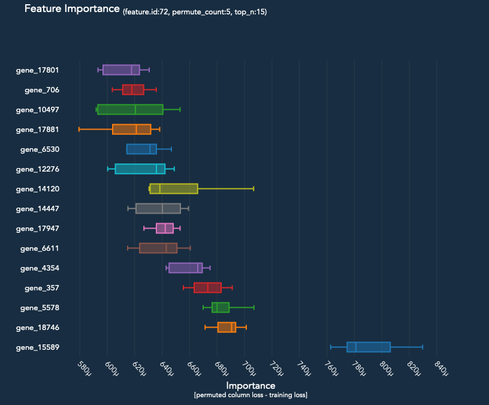
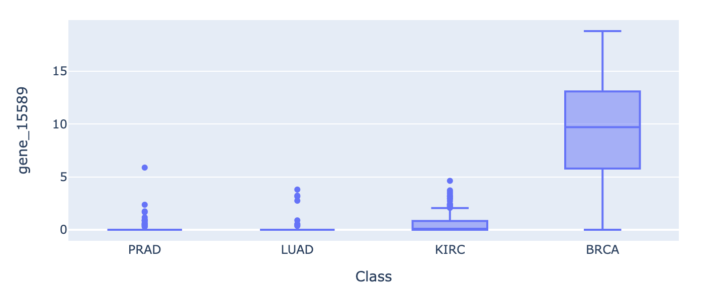

Feature Importance for Genetic Target Validation
Classifying 5 tumor types based on their mRNA expression levels in 20,532 genes.
Context
This dataset is comprised of:
Features - the expression of 20,532 genes from 800 participants.
Labels - the type of tumor: BRCA, KIRC, LUAD or PRAD.
Source: The Cancer Genome Atlas (TCGA) https://archive.ics.uci.edu/ml/datasets/gene+expression+cancer+RNA-Seq
Unfortunately, the gene names were not published with the dataset. I contacted the submitting organization, but they were not able to provide an index.
Although the oncogene relationships already known (the tumors are named after gene complexes), the purpose of this experiment is to validate that neural networks can be used to rapidly reveal these patterns in the presence of highly dimensional data. This methodology could also be repurposed for delineating biomarkers of different stages/ subtypes within a single disease.
Prior to ingestion:
Balanced the dataset based on the ‘Class’ column, which essentially meant deleting 150 BRCA samples.
Filtered out low expression frequency (EF) genes, but that still left over 19.5K genes.
💾 Data
[2]:
from aiqc.orm import Dataset
[2]:
shared_dataset = Dataset.Tabular.from_path("~/Desktop/TCGA/expression.parquet")
🚰 Pipeline
Reference High-Level API Docs for more information.
[ ]:
from aiqc.mlops import Pipeline, Input, Target, Stratifier
from sklearn.preprocessing import OneHotEncoder, StandardScaler
[6]:
pipeline = Pipeline(
Input(
dataset = shared_dataset,
exclude_columns = ['sample_ID'],
encoders = Input.Encoder(
StandardScaler(),
dtypes = ['float64']
)
),
Target(
dataset = shared_dataset,
column = 'Class',
encoder = Target.Encoder(OneHotEncoder())
),
Stratifier(
size_validation = 0.22,
size_test = 0.08
)
)
🧪 Experiment
Reference High-Level API Docs for more information.
[ ]:
import tensorflow as tf
from tensorflow.keras import layers as l
[ ]:
def fn_build(features_shape, label_shape, **hp):
m = tf.keras.models.Sequential()
m.add(l.Input(shape=features_shape))
# First hidden layer.
m.add(l.Dense(hp['first_neurons'], kernel_initializer=hp['init']))
m.add(l.BatchNormalization())
m.add(l.Activation(hp['activation']))
m.add(l.Dropout(hp['drop_rate']))
# Output layer
m.add(l.Dense(units=label_shape[0], activation='softmax'))
return m
[ ]:
def fn_train(
model, loser, optimizer,
train_features, train_label,
eval_features, eval_label,
**hp
):
model.compile(loss=loser, optimizer=optimizer)
model.fit(
train_features, train_label
, validation_data = (eval_features, eval_label)
, verbose = 0
, batch_size = hp['batch_size']
, epochs = hp['epochs']
, callbacks = [tf.keras.callbacks.History()]
)
return model
[ ]:
hyperparameters = dict(
first_neurons = [120]
, activation = ['relu']
, init = ['he_uniform']
, epochs = [10]
, batch_size = [8]
, drop_rate = [0.4]
, learning_rate = [0.01]
)
[10]:
experiment = Experiment(
Architecture(
library = "keras"
, analysis_type = "classification_multi"
, fn_build = fn_build
, fn_train = fn_train
, hyperparameters = hyperparameters
),
Trainer(
pipeline = pipeline
, repeat_count = 2
, permute_count = 5
)
)
Ironically, the neural network takes less than 30 seconds to train. Whereas the feature permutations take 3+ hours.
[ ]:
experiment.run_jobs()
📊 Visualization & Interpretation
For more information on visualization of performance metrics, reference the Dashboard documentation.
The patterns must be shockingly absolute. After our first try with a single hidden layer, we achieve a perfect score. This is surprising given the use of a validation and test split, and given the fact that there are 4 different categories.
[ ]:
queue.metrics_df()
[ ]:
from aiqc.orm import Predictor
[ ]:
id = 671
predictor = orm.Predictor.get_by_id(id)
prediction = predictor.predictions[0]
[ ]:
prediction.plot_confusion_matrix()

The Experiment.permute_count parameter determines how many times each feature is permuted and run back through the model. The median difference in loss is then compared to the baseline loss of the model.
[ ]:
prediction.plot_feature_importance(top_n=30)

[ ]:
import pandas as pd
df = pd.read_parquet("/Users/layne/desktop/TCGA/TCGA_expression.parquet")
[ ]:
import plotly.express as px
px.box(df, x="Class", y='gene_15589', height=50).show()
px.box(df, x="Class", y='gene_17801', height=50).show()


Interpretting the top 30 features in box plots, we can observe that:
BRCA expression is independent from the others. It is significantly more expressed across our top 5 candidate genes. The signal/ patterns are stronger.
The PRAD, LUAD, and KIRC, tumors appear to be coexpressed. Perhaps those cancers share a pathway.
There is an accumulation of over-expression across many genes, not just 1 or 2.
If we had a 5th control group of benign samples, we could learn a lot more.